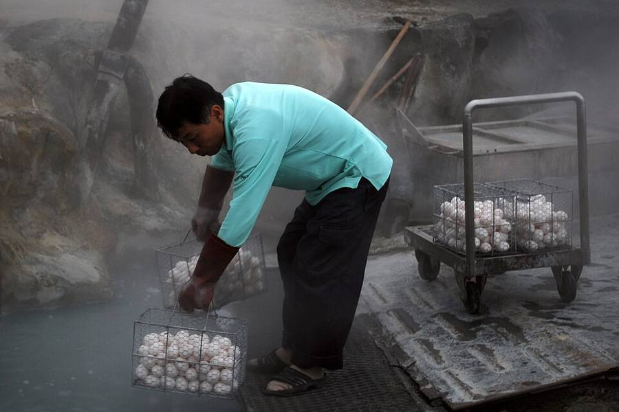
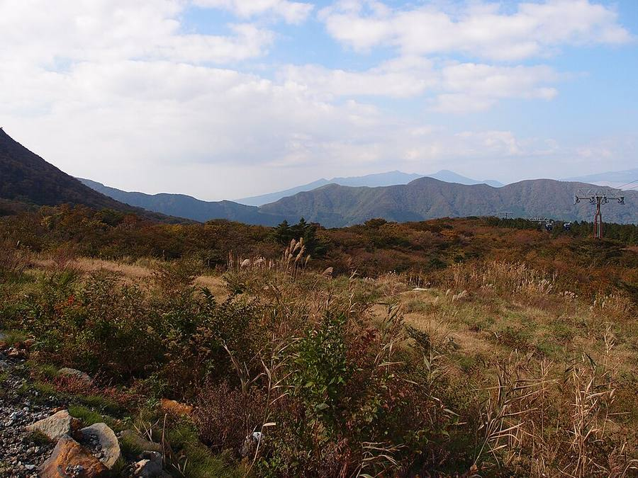
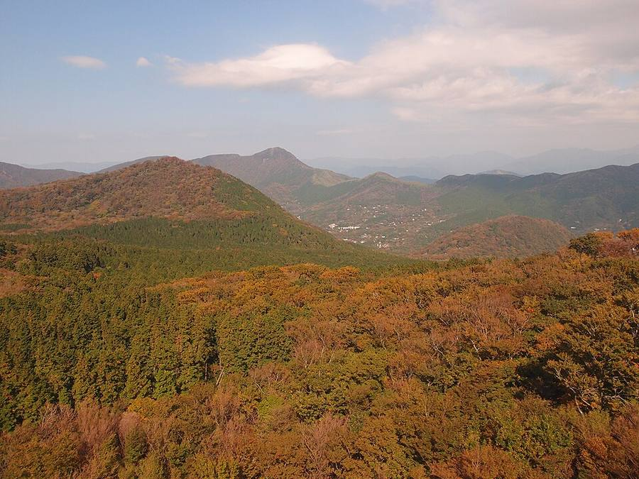
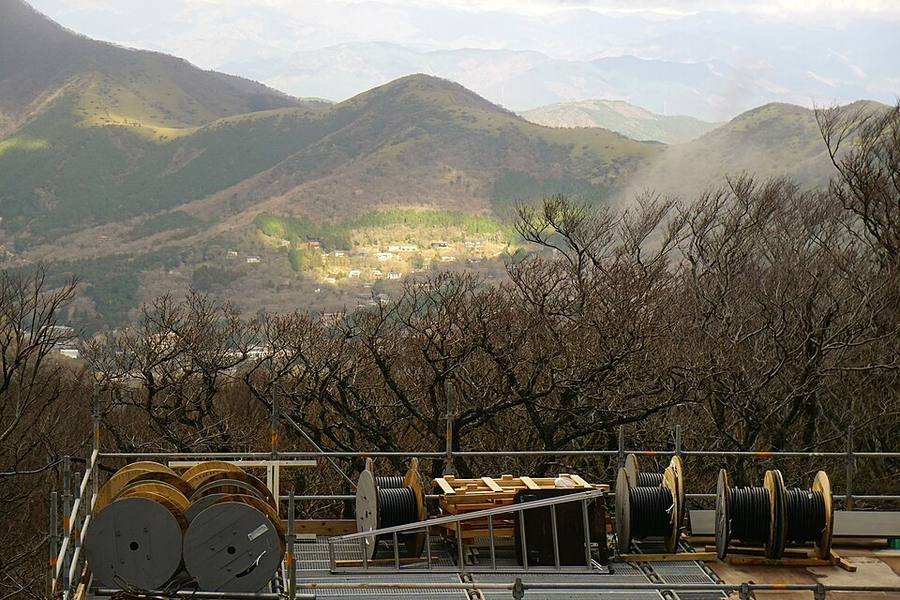

Owakudani, «долина гейзеров» в Hakone
Вулканическая долина с паром и серой. Настоящих фонтанирующих гейзеров здесь нет: это паровые выходы



.jpg){kind=link}



.jpg){kind=link}


.jpg){kind=link}



Насколько интересно
- Кратер извержения около 3 000 лет назад. Пар из склона, запах серы, жёлтые камни.
- Главная фишка - чёрные яйца kuro-tamago: их варят в горячей серной воде, скорлупа чернеет.
- Короткая тропа около 30 минут, только по записи на сайте, взнос 800 ¥. Длинные тропы закрыты из-за вулканической активности.
- Лучший вид - из кабины канатки, она проходит прямо над паром. Канатка Sounzan → Togendai около 30 мин, 9:00-17:00.
- Безопасность: в списке вулканических предупреждений JMA на 12.10 Hakone нет, то есть уровень 1. По сайту префектуры Kanagawa (обновлён 27.05.2026), канатка работает без особых ограничений, дорога открыта 9:00-17:00. Людям с астмой и проблемами дыхания туда не советуют.
Погода
Ср 14.10: +17/+13, около 2 мм дождя, вероятность 78%. Чт 15.10: +16/+10, сухо, но облачно (~70%), Fuji скорее всего не видно.
Как съездить из Токио
Romancecar из Shinjuku до Hakone-Yumoto около 85 мин, дальше поезд, фуникулёр и канатка до Owakudani. Hakone Freepass из Shinjuku на 2 дня 7 100 ¥ (Romancecar доплачивается). На день хватает, но это почти весь день в дороге.
Мой вывод: 1-2 часа впечатлений, сама долина небольшая. Если хочется именно «пар из земли и гейзер», на юге есть сильнее: в Beppu настоящий гейзер и семь «адов». Он ложится на путь Kyoto → Okinawa.
Срез 12.10.2026, 10:00-12:00 по Токио. Погода: прогноз Open-Meteo на 12.10. Листва: Weathernews, визит-центр Nikko Yumoto, официальный сайт Tateyama Kurobe Alpine Route. Вулканы: Японское метеоагентство (JMA), префектура Kanagawa. Часы и цены: официальные сайты и japan-guide.com. Переезды: japan-guide, ekitan, Rome2Rio, обзоры. Фото: Wikimedia Commons (автор и лицензия под каждым), визит-центр Nikko Yumoto. Карта: Esri. Отели не проверялись и не бронировались.